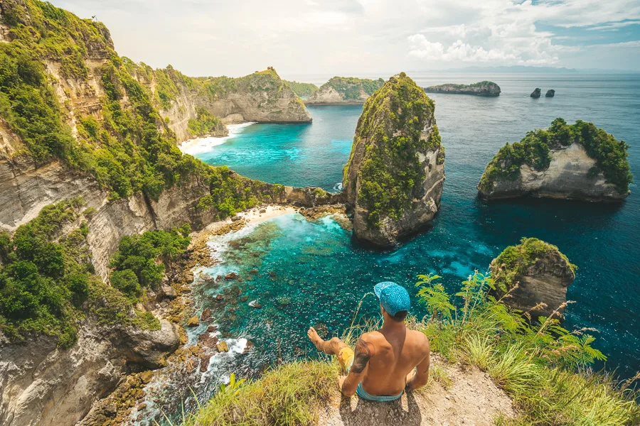

TENTANG KAMI
Melali.id adalah platform yang membantu kamu untuk memenuhi segala
kebutuhanmu selama berlibur dibali. Kami adalah travel agency yang
mengakomodasi segala kebutuhan anda baik itu pemilihan perjalanan,
penginapan, destinasi wisata yang ada di Pulau Bali. Ingin liburan
ke Bali?. Melali.id aja.
LAYANAN
Kami menyediakan tour guide bagi anda yang memerlukan pemandu
wisata.
detail...
Kami menyediakan akomodasi perjalanan untuk anda dengan harga
yang bersahabat.
detail...
Kami menyediakan paket perjalanan dari liburan singkat, sampai
semau anda!
detail...
PULAU BALI

Bali adalah primadona pariwisata Indonesia yang sudah terkenal di
seluruh dunia. Selain terkenal dengan keindahan alam, terutama
pantainya, Bali juga terkenal dengan kesenian dan budayanya yang
unik dan menarik. Industri pariwisata berpusat di Bali Selatan dan
di beberapa daerah lainnya. Lokasi wisata yang utama adalah Kuta dan
sekitarnya seperti Legian dan Seminyak, daerah timur kota seperti
Sanur, pusat kota seperti Ubud, dan di daerah selatan seperti
Jimbaran, Nusa Dua dan Pecatu.
Bali sebagai tempat tujuan wisata yang lengkap dan terpadu memiliki
banyak sekali tempat wisata menarik, antara lain: Pantai Kuta, Pura
Tanah Lot, Pantai Padang - Padang, Danau Beratan Bedugul, Garuda
Wisnu Kencana (GWK), Pantai Lovina dengan Lumba Lumbanya, Pura
Besakih, Uluwatu, Ubud, Munduk, Kintamani, Amed, Tulamben, Pulau
Menjangan dan masih banyak yang lainnya. Kini, Bali juga memiliki
beberapa pusat wisata yang sarat edukasi untuk anak-anak seperti
kebun binatang, museum tiga dimensi, taman bermain air, dan tempat
penangkaran kura-kura.